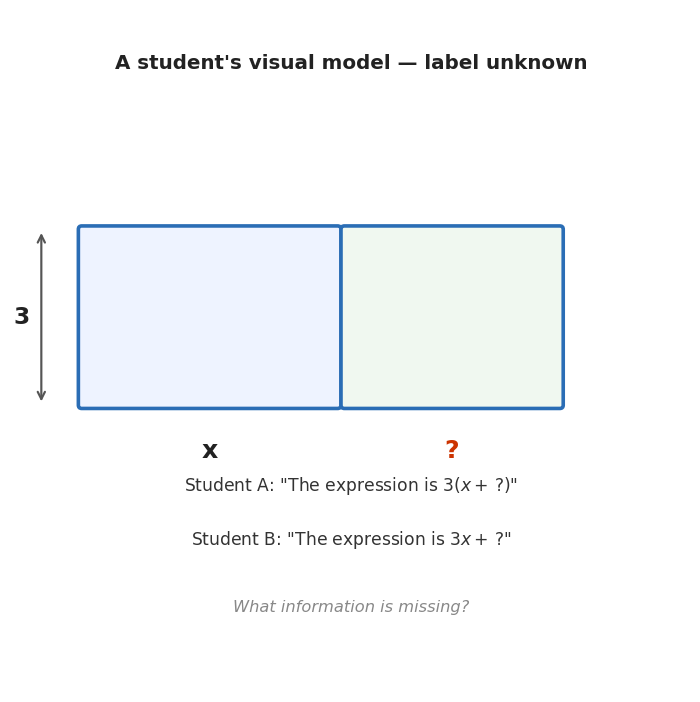
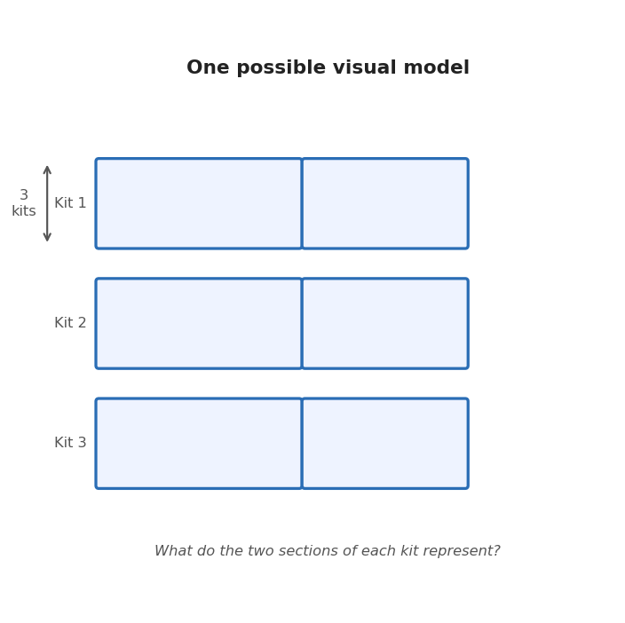
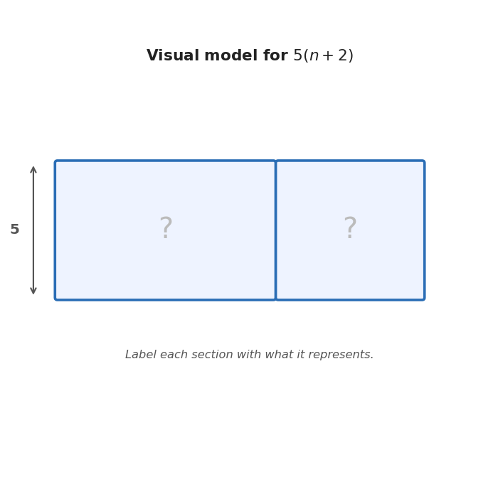
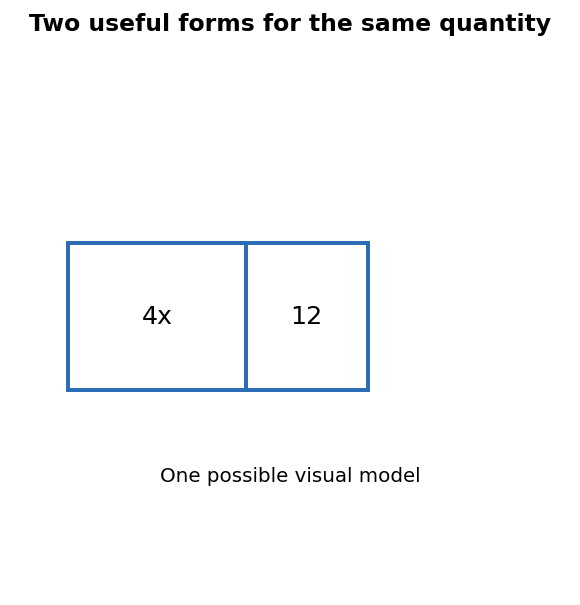

Mathematical idea: Rewriting an expression should preserve its value while making a different feature of the quantity easier to see.
Today we will practice interpreting expression parts, rewriting equivalent expressions, analyzing errors, and choosing forms that reveal meaning.
Students will interpret and rewrite algebraic expressions by identifying structure, meaning, and equivalent forms.
I can statements
This is a long-range preview for future lessons. Do not solve it today. Instead, annotate it individually. Circle anything familiar, underline symbols or directions that seem important, and write notes about what information you think will be needed later.
As you annotate, ask yourself: Which student's interpretation could be correct? What is missing from the model? What would need to be true for each expression to be right?
Future Task — Ambiguous Visual Model
A student draws an area model to represent an expression. The height is labeled 3 and the left section's width is labeled $x$, but the right section's width is unlabeled. Two students disagree about what expression the model represents.

Directions
Read the introduction aloud with a partner or in a small group. As you read, annotate the text by highlighting important ideas, circling key vocabulary, and writing short notes about connections, questions, or predictions in the margins.
An expression is a mathematical phrase. It can include numbers, variables, operations, and grouping symbols. Unlike an equation, an expression does not have an equals sign.
Expressions can describe quantities. For example, if a club charges a fee and then charges more for each item, one part of the expression might show the fee and another part might show the repeated cost.
Structure means how the parts of an expression are arranged. The expression $4x+12$ shows two separate parts being added. The expression $4(x+3)$ shows a group being multiplied by 4. Sometimes expressions look different but are equivalent, which means they always have the same value for the same input.
Rewriting expressions is useful when a new form reveals something important. One form might show the total as parts. Another form might show groups. A strong algebra student does not just rewrite symbols; they explain what the structure means.
Stop and Discuss
An algebraic expression can be read by looking at its parts and how those parts are connected.
Key question: What does each part mean in the situation?
A classroom buys 3 identical supply kits. Each kit contains $x$ markers and 4 glue sticks. A student writes the expression $3(x+4)$.

A party planner buys 5 snack bags. Each bag has $c$ crackers and 2 fruit snacks. Two students write expressions for the total number of snacks:
Student A: $5(c+2)$
Student B: $5c+10$
Equivalent expressions are expressions that always have the same value for the same input.
Useful test: Does the new expression keep the same quantity, or did something change?
A student is tracking points from two games. Their expression is $6p+4+3p+8$.
A student claims $5(n+2)$ and $5n+10$ are equivalent.

Stop and Discuss
A student says, "If two expressions have the same numbers and variables, they must be equivalent." What is wrong with that reasoning?
When checking student work, look for the moment when the structure changed incorrectly.
A student simplifies $3x+4+2x$ as $9x$.
Student work: $3x+4+2x = 9x$ because $3+4+2=9$.
A student rewrites $4(x+6)$ as $4x+6$.
Student explanation: "I multiplied the $x$ by 4, and the 6 was already there."
Equivalent expressions can be useful in different ways.
Decision question: Which form makes the important idea easiest to see?
A school club buys supplies. Two equivalent expressions are shown:
$$4x+12 \qquad \text{and} \qquad 4(x+3)$$

A gym rents equipment for \$7 per person and charges one group fee of \$14.
Expressions describe quantities using variables, constants, terms, factors, operations, and grouping symbols. The structure of an expression shows how the parts of a quantity are connected.
Equivalent expressions may look different but keep the same value for the same input. Rewriting can make an expression easier to simplify, easier to connect to a context, or easier to compare with another representation.
Strong algebraic reasoning means checking whether the meaning stayed the same, not just moving symbols around.
Look back at the future task. Do not solve it yet. Highlight one part that makes more sense now than it did at the beginning. Circle one part that still feels unfamiliar. Write one sentence about what representation you would look at first.